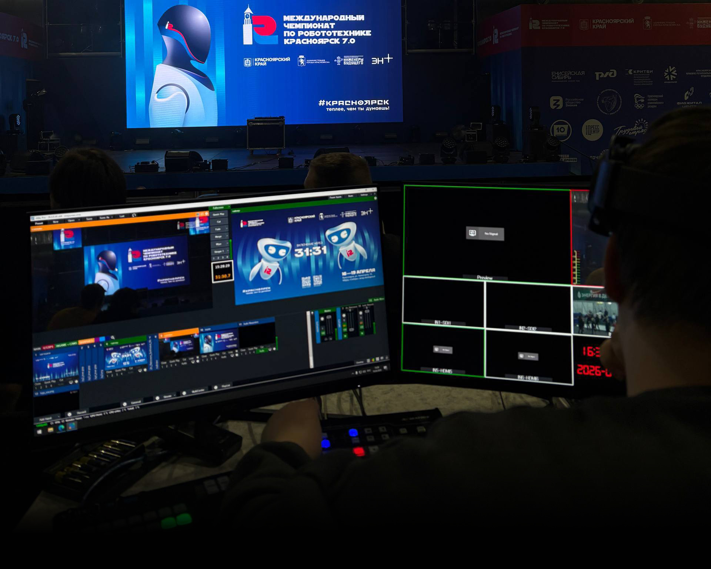
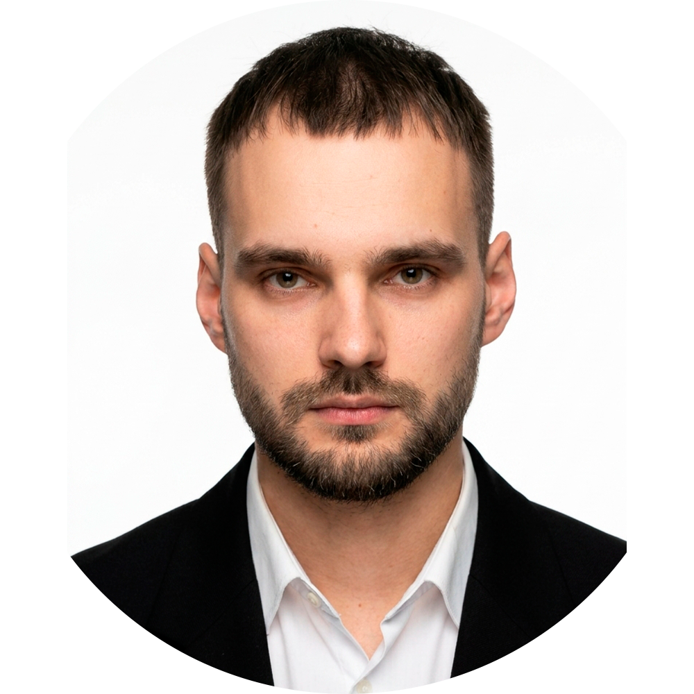
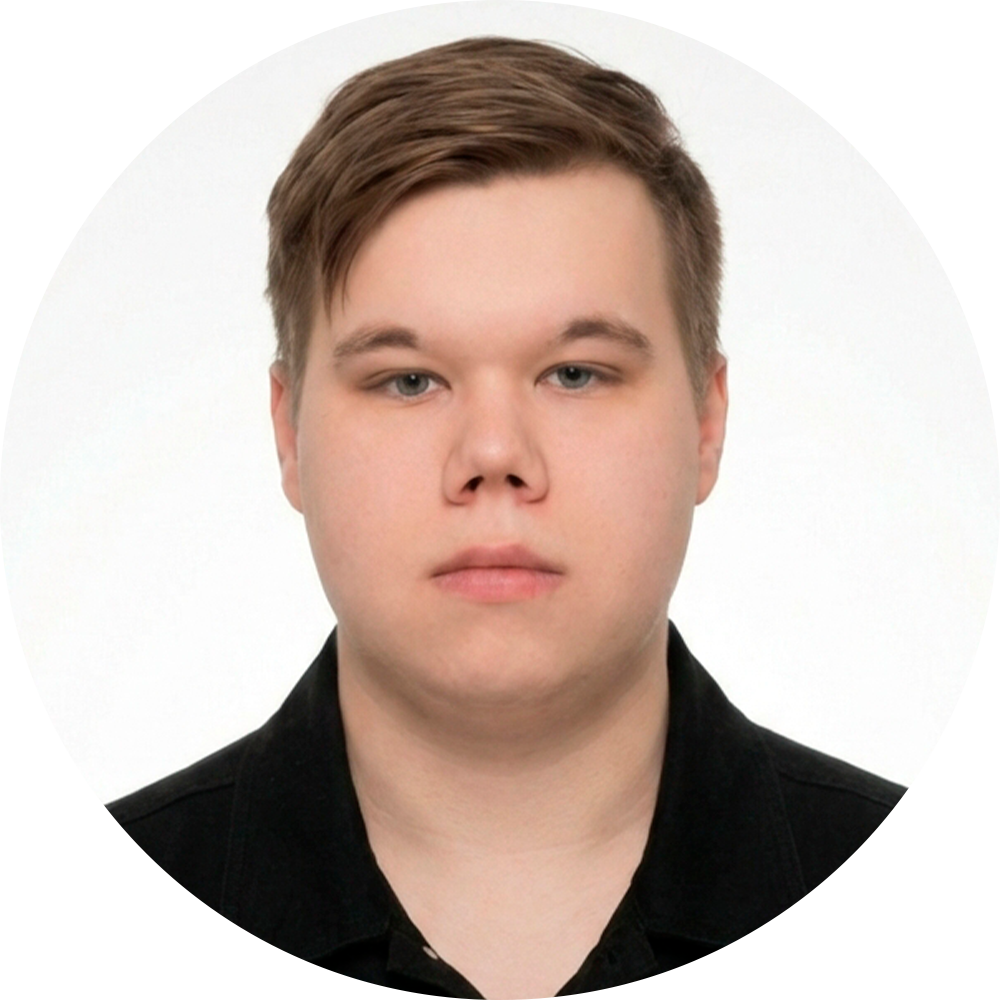
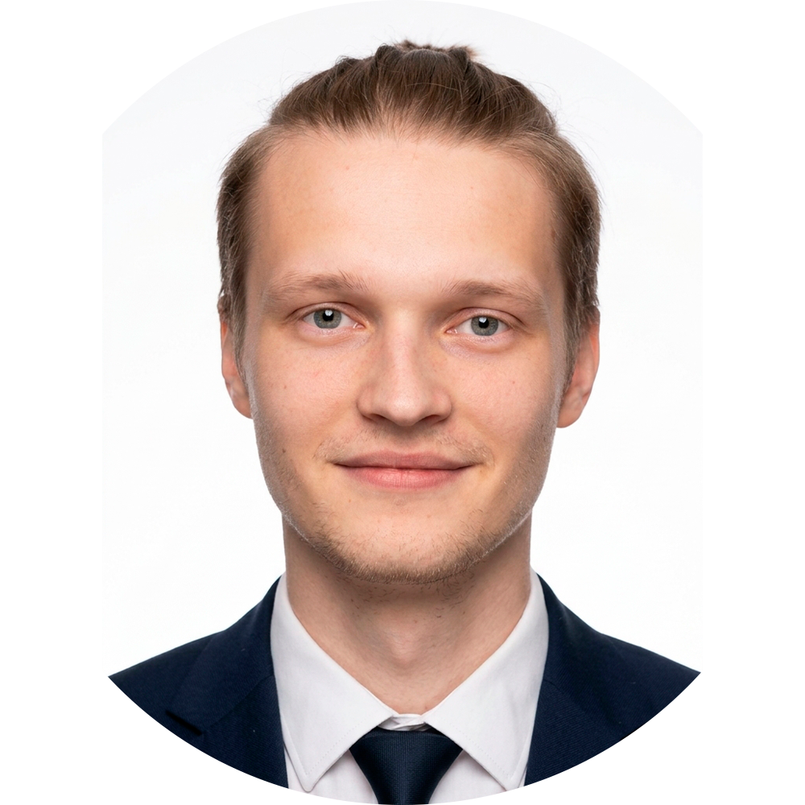
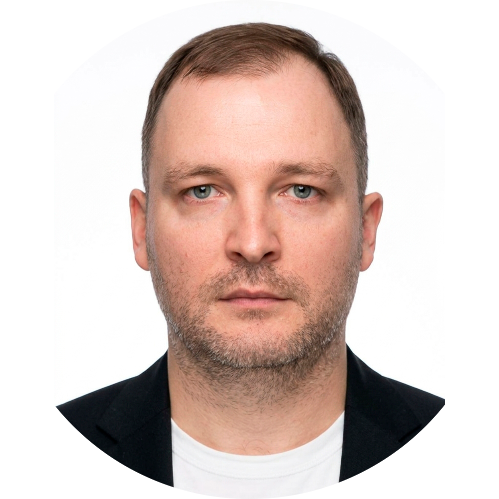

Мультикамерная съёмка
До 6 камер Panasonic AG-CX10 с синхронизацией по таймкоду. Кинематографичная картинка даже при сложном освещении.
Мультикамерная съёмка спортивных событий, конференций и концертов. Привозим полный комплект оборудования и команду профессионалов.
От рекогносцировки площадки до архивной записи эфира
До 6 камер Panasonic AG-CX10 с синхронизацией по таймкоду. Кинематографичная картинка даже при сложном освещении.
Одновременная выдача сигнала на YouTube, VK Video, Rutube и кастомные CDN. Собственный рестрим-сервер для стабильности.
Нижние трети, табло, повторы и заставки в фирменном стиле мероприятия. Рендеринг через CasparCG/vMix.
Беспроводные системы Phenyx Pro PTU7000 и петлички Audio-Technica. Отдельный звукоинженер на каждом проекте.
Переключение планов, управление графикой и звуком в реальном времени. Опытный режиссёр эфира на площадке.
Работаем в Норильске, Дудинке, Абакане. Привозим всё оборудование с собой.
Фиксированная стоимость. Доплаты только за дополнительное оборудование.
Проекты, которые мы реализовали для клиентов в Красноярске и крае
Финал с комментаторами, полным пакетом графики и instant-повторами
Студенческая лига с одновременной трансляцией на 3 платформы
Творческий фестиваль с художественной съёмкой и атмосферной графикой
Не используем любительское оборудование. Только проверенные решения для прямого эфира.

Panasonic AG-CX10 × 4 — 4K/60fps
Olympus E-M5 Mark II — дополнительные ракурсы и slow-motion
AVMATRIX VS0601U — аппаратный свитчинг до 6 источников
vMix Pro — программный микшер для графики и повторов
Phenyx PRO PTU7000 — беспроводные системы UHF
Audio-Technica BPHS-1, Audio-Technica AT2020 — наушники и микрофоны
Hollyland Solidcom C1 — интерком для команды
Собственный рестрим-сервер в Красноярске
Люди, которые отвечают за каждый кадр и каждую секунду прямого эфира

10+ лет в телевизионном производстве. Стратегия и развитие

100+ трансляций. Мастер живого эфира и многокамерной режиссуры

Настройка оборудования, стриминг, мониторинг сигнала. Решает проблемы до того, как они станут видны зрителю.

Отвечает за картинку, свет и композицию кадра.

Переговоры, договоры, выстраивание долгосрочных отношений с площадками и клиентами.

Координация логистики, брифинги, клиентский сервис. Связующее звено между вами и технической командой.
Четыре шага от заявки до стабильного эфира
Обсуждаем задачу, осматриваем площадку, составляем техническое задание и схему расстановки камер.
Разрабатываем нижние трети, заставки, табло и переходы в фирменном стиле вашего мероприятия.
Приезжаем заранее, разворачиваем оборудование, тестируем сигнал, интернет и звук.
Запускаем трансляцию. Режиссёр управляет эфиром в реальном времени, техник мониторит сигнал.
Расскажите о мероприятии — подготовим предложение и смету в течение 24 часов